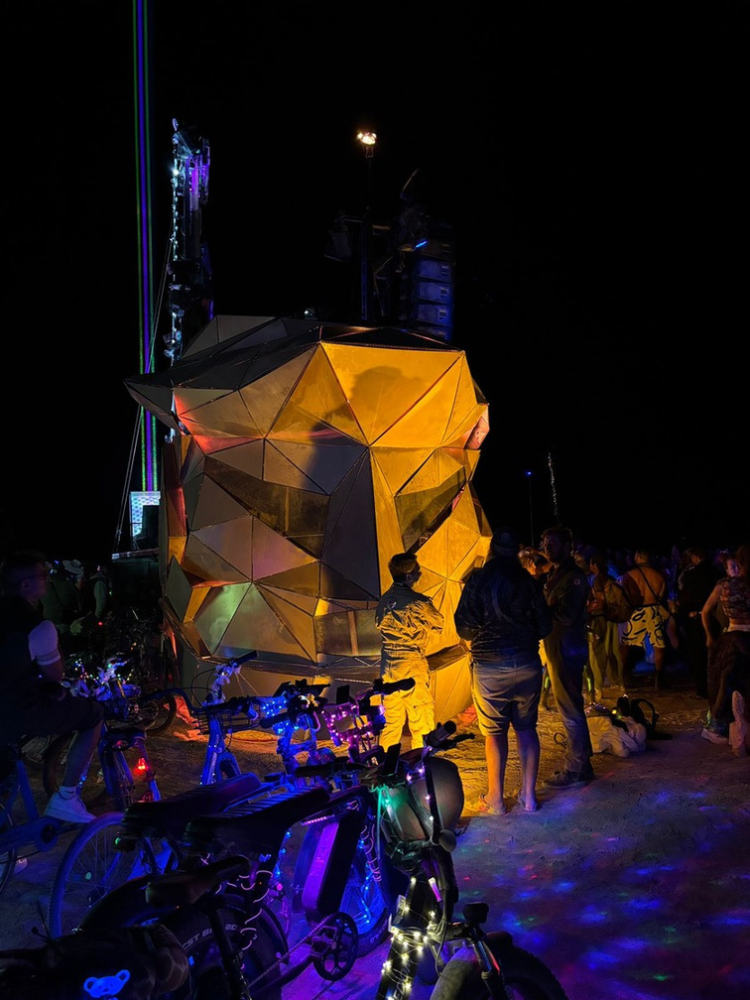
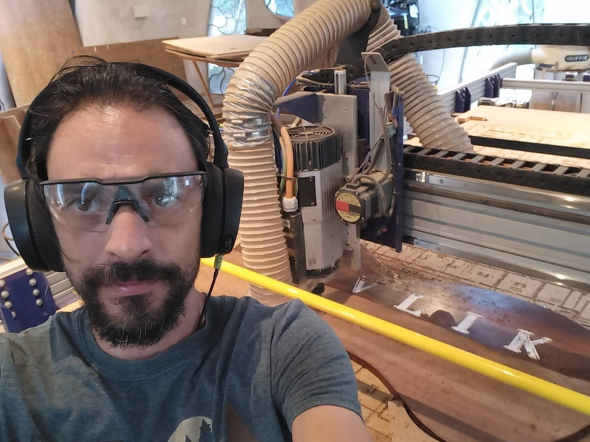
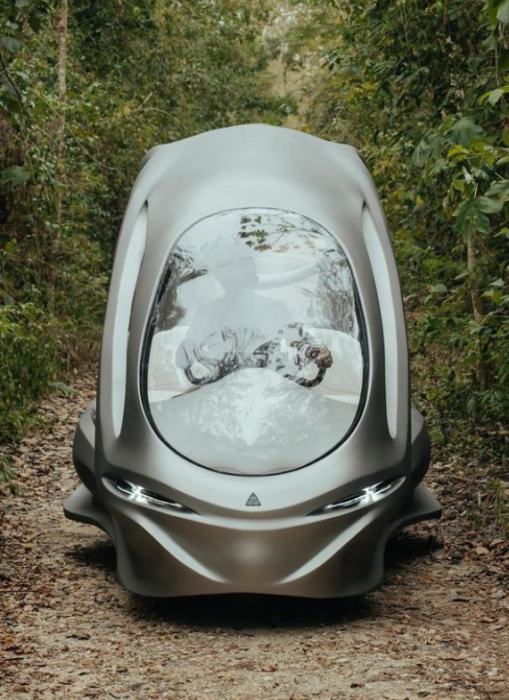
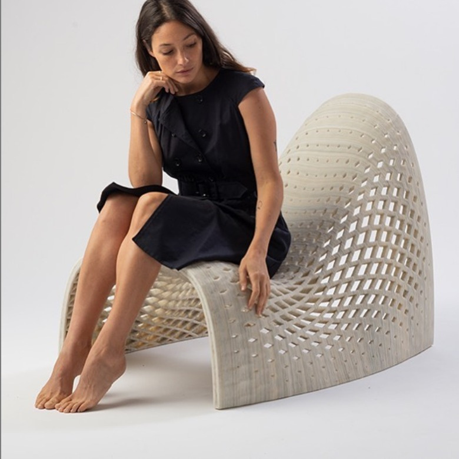
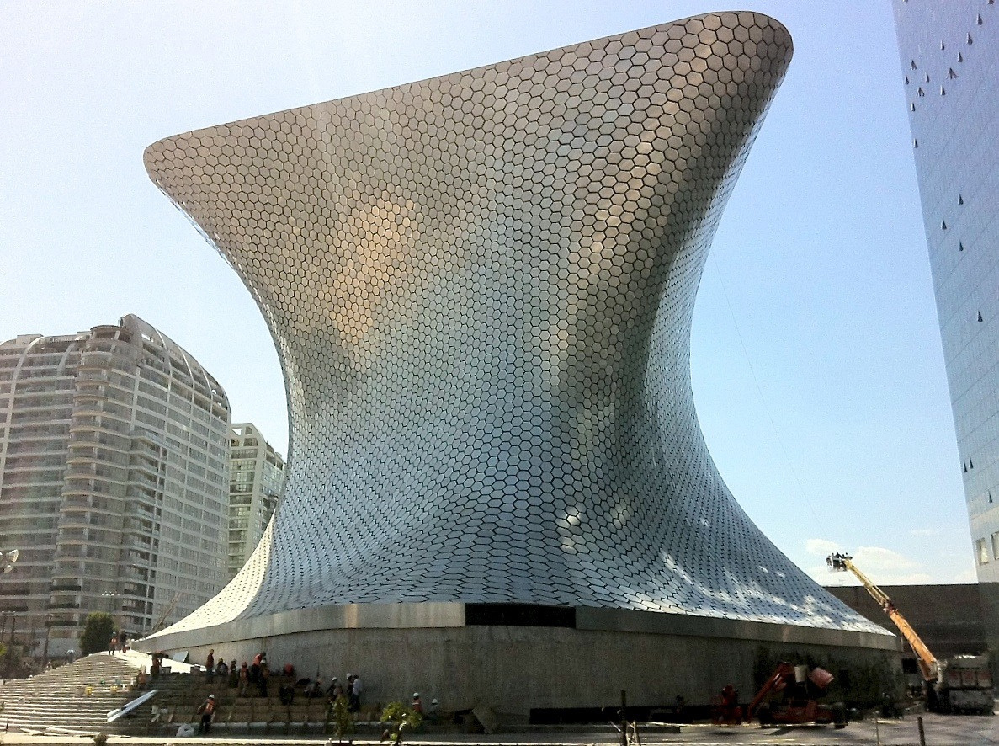
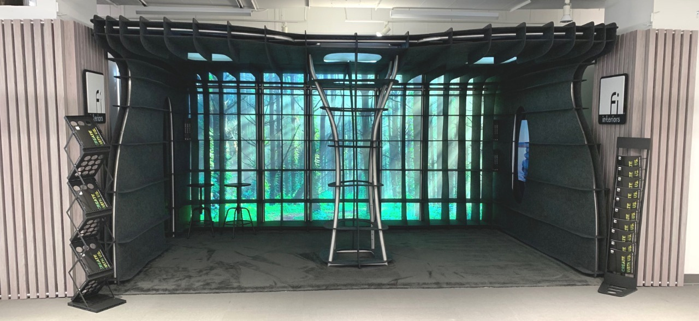

Burning Man · 2024–2025
Mayan Warrior
Estrategia computacional, nesting, código G y secuencia de ensamblaje para más de 1,500 componentes únicos mecanizados en CNC.
- Grasshopper
- Python
- CNC
21.16° N · 87.48° W Tulum, México
Diseño computacional, modelado orgánico/paramétrico y desarrollo con inteligencia artificial para traducir patrones, datos e intuiciones en materia.
Geometría espacial
Simetría multidimensional, estelaciones y detalle recursivo convertidos en una pieza escultórica.
Jamagax Studio es el laboratorio creativo de Dimensión N: una interfaz entre información, geometría y materia. Convertimos patrones, fuerzas y datos en sistemas que pueden verse, probarse y fabricarse.
Desde Tulum colaboramos con arquitectos, artistas, desarrolladores y marcas en proyectos que requieren geometría no estándar, racionalización y control real de producción.

Director del estudio
Diseñador industrial y Maestro en Arquitectura Sustentable. Fundador de Dimensión N, autor de La Enciclopedia Geométrica y pionero de la enseñanza de Grasshopper en Latinoamérica.
Fue Fab Lab Manager y Director de Producción en Roth Architecture–Azulik, líder de diseño computacional para Mayan Warrior y profesor en Ibero, CENTRO, Anáhuac y Tecnológico de Monterrey.
Una trayectoria que cruza arquitectura, arte monumental, fabricación industrial, producto e interfaces sensibles.

Estrategia computacional, nesting, código G y secuencia de ensamblaje para más de 1,500 componentes únicos mecanizados en CNC.

Dirección de fabricación de moldes MDF a gran escala y componentes orgánicos en maderas exóticas.

Una pieza exterior de menos de 3 kg, optimizada para imprimirse en gran formato en menos de 24 horas.

Participación en el equipo inicial de diseño de fachada para una de las primeras aplicaciones emblemáticas del diseño paramétrico en México.

Sistema de exhibición en fieltro para NeoCon, automatizado desde la geometría hasta planos y archivos de corte.

Personajes, moldes y producción para marcas, concursos y talleres: del modelado a la pieza pintada.
Ingeniería DfM para una escultura ambiental de Burning Man que obtiene agua potable de la humedad atmosférica.
Interfaz de audio que convierte las frecuencias electromagnéticas de motores paso a paso en sonido de 8 bits.
Sensores capacitivos y audio generativo para transformar el impacto físico de gotas de agua en música.
Estación meteorológica autónoma financiada por CONACYT para telemetría y registro climático en lugares remotos.
Interpretamos información compleja y la conducimos por una cadena precisa: intuición, geometría, simulación y fabricación.
Form-finding, sistemas paramétricos, simulación física y herramientas a medida para controlar geometrías complejas.
Fotogrametría, escaneo 3D, point clouds, Gaussian Splatting y reparación de datos pesados para obtener geometría limpia.
Racionalización, nesting, G-code, impresión 3D, CNC y documentación directa a máquina para producir sin improvisación.
Electrónica, sensores, gemelos 3D web y agentes con LLM/MCP que conectan espacios, datos y procesos de diseño.
“La forma no se impone.
La forma emerge de las
fuerzas que la atraviesan.”
Leemos fuerzas invisibles —continuidad, tensión y flujo— y las convertimos en decisiones geométricas verificables.
La transformación no es magia: cada decisión conecta una intención con una regla, una geometría y un resultado fabricable.
Definimos el ADN geométrico, las fuerzas y los criterios del proyecto.
Construimos un sistema paramétrico para iterar con velocidad y control.
Paneles, uniones, tolerancias y secuencias se validan antes de fabricar.
Entregamos G-code, DXF anidados, robot paths o archivos de impresión listos.